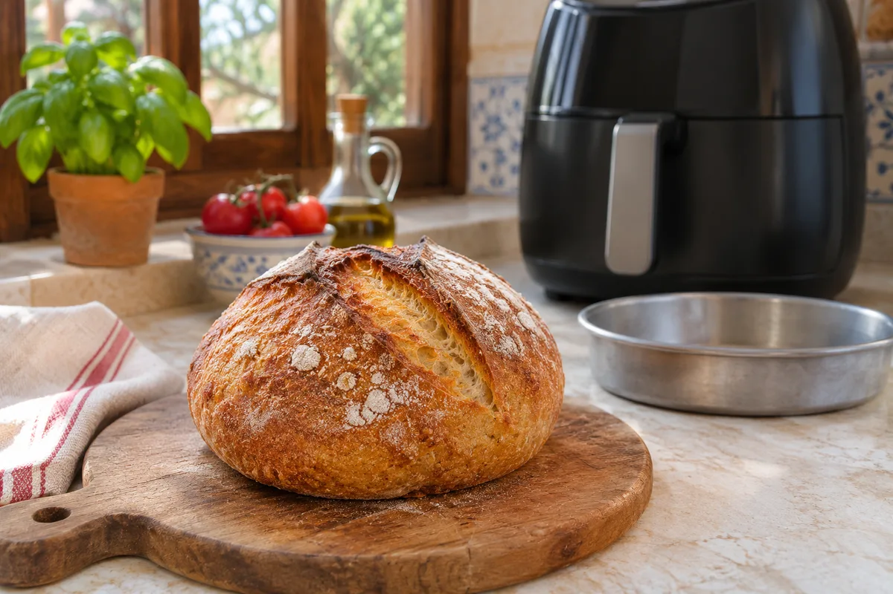

PANE E PIZZA · FASE 2 · 19 NOVEMBRE 2026
Una pagnotta da circa 500 g nella friggitrice ad aria da 8 litri
Pane semplice, con pasta madre già matura, senza lievito di birra. Qui trovi una ricetta pesata per una sola pagnotta, il calendario dal rinfresco al taglio e due cotture alternative: friggitrice da 8 litri o forno tradizionale.

100 g pasta madre solida matura + 300 g farina tipo 0 + 200 g acqua + 8 g sale = 608 g di impasto crudo.
Durante la cottura il pane perde acqua. Il risultato atteso è circa 500–520 g dopo il raffreddamento, non 500 g esatti: la perdita reale varia da un apparecchio all'altro.
Teglia: rotonda in metallo da circa 17,5 cm, purché adatta alla friggitrice e con spazio libero intorno per il passaggio dell'aria.
1. Prepara ingredienti e attrezzi
Ti servono bilancia digitale, ciotola, spatola, termometro per ambiente, termometro alimentare a sonda, telo pulito e una teglia da 17,5 cm. Non usare la modalità preimpostata «pane» senza verificare la temperatura effettivamente impostata.
Quando prendere il lievito? Solo quando la madre solida è in salute e ha superato la prova della triplicazione in circa 4 ore a 28 °C. Rinfrescala prima della ricetta e pesane 100 g quando ha raggiunto il suo massimo. Se è stata in frigorifero, possono servire più rinfreschi di riattivazione: non usare un panetto ancora debole.
Dove lavorare: in cucina pulita, con impasto tenuto tra 24 e 26 °C durante la lievitazione. Se la stanza è fredda i tempi si allungano; se è più calda controlla spesso. Non mettere la ciotola a contatto diretto con termosifoni o altre fonti di calore.
2. Impasta, fai le pieghe e forma il pane
- Ore 12:00 — Mescola. Metti i 100 g di madre matura nella ciotola con i 200 g di acqua, spezzetta il lievito e distribuiscilo con le dita. Versa i 300 g di farina e mescola finché non vedi più polvere asciutta. Copri e aspetta 20 minuti.
- Ore 12:20 — Sala e impasta. Aggiungi 8 g di sale. Lavora 8–10 minuti con le mani: ripiega e premi l'impasto fino a renderlo omogeneo. Sarà morbido e appena appiccicoso, non una pastella. Se si attacca, bagna leggermente le mani; evita di aggiungere farina non pesata.
- Ore 13:00 e 13:40 — Due pieghe. Con mani leggermente umide solleva un lembo dell'impasto e ripiegalo verso il centro; ruota la ciotola e ripeti sui quattro lati. Sono 4 pieghe per ogni giro. Ricopri tra i due giri. Le pieghe aiutano a dare struttura senza lavorare ancora per molti minuti.
- Fino alle 16:00 circa — Prima lievitazione. Tieni coperto a 24–26 °C. Cerca un aumento di volume indicativo del 40–60%, con superficie più gonfia e bollicine ai lati: non aspettare necessariamente il raddoppio. Il tempo indicato (circa 3–5 ore dall'impasto) dipende dalla forza del lievito.
- Forma la pagnotta. Trasferisci l'impasto sul piano appena infarinato. Ripiega i bordi sotto, poi arrotonda con le mani cercando una superficie tesa senza strappare. Metti la chiusura sotto, nella teglia leggermente unta oppure foderata con carta da forno rifilata esattamente alla base.
- Ultima lievitazione. Copri la teglia con un telo pulito senza appoggiarlo sulla pasta e lascia a 24–26 °C per circa 1–2 ore. Deve apparire visibilmente più gonfia; se premi appena con un dito infarinato, l'impronta torna indietro lentamente. Se rimbalza subito aspetta ancora, se collassa è andata troppo avanti.
Non usare la sola ora sul quadrante per decidere se cuocere: prima osserva il volume e la tenuta dell'impasto. La temperatura della cucina e la madre rendono i tempi necessariamente variabili.
Quel riposo è un'autolisi? Nei 20 minuti iniziali di questa ricetta la madre è già presente: è un riposo dell'impasto con fermentazione avviata. Nell'autolisi classica riposano soltanto farina e acqua. La guida a tangzhong, autolisi, biga e poolish spiega le differenze e quando servono le quattro tecniche.
3. Calendario d'esempio per una giornata
Il calendario è un esempio, non un timer automatico. Se il tuo lievito arriva al massimo alle 14:00, sposta le lavorazioni successive. Il LI.CO.LI. può impiegare 6–8 ore dal rinfresco a raggiungere il massimo: parti da quell'ora, non dall'08:00 della tabella.
4. Cottura nella friggitrice ad aria da 8 litri
Una friggitrice da 8 litri offre una capacità nominale, non una misura garantita del cestello: la teglia da 17,5 cm deve entrare senza forzature e lasciare libere le aperture di ventilazione. Verifica nel manuale del tuo apparecchio che la teglia sia adatta e che le temperature siano disponibili.
- Preriscalda a 180 °C per 5 minuti, senza carta da forno sciolta nel cestello: la ventola potrebbe sollevarla verso la resistenza.
- Incidi la pagnotta con un taglio netto profondo circa 0,5–1 cm poco prima di inserirla. Metti la teglia nel cestello caldo usando presine, senza toccare le resistenze.
- Prima fase: cuoci a 180 °C per 12 minuti. Non aprire nei primi 10 minuti se non serve: il pane sta ancora espandendosi.
- Seconda fase: abbassa a 160 °C per 25–35 minuti. Controlla dopo 25 minuti: se la crosta scurisce troppo, riduci ulteriormente di circa 10 °C. La durata totale sarà indicativamente 37–47 minuti, non un valore garantito.
- Controlla il centro. Inserisci la sonda nella parte più spessa, senza toccare la teglia: cerca 96–98 °C. Se il centro è sotto, continua per intervalli di 5 minuti. Una crosta marrone non dimostra che la mollica sia cotta.
- Raffredda fuori dalla teglia su una griglia per almeno 90 minuti. Solo allora taglia: una mollica calda sembra spesso umida anche quando la cottura è giusta.
5. Se preferisci il forno tradizionale
Usa lo stesso impasto e la stessa lievitazione. Preriscalda il forno statico a 220 °C per almeno 25–30 minuti. Cuoci la pagnotta nella teglia adatta al forno, sul ripiano medio-basso: 15 minuti a 220 °C, poi 25–30 minuti a 190 °C. Anche qui verifica il centro a 96–98 °C e prolunga se serve. Se usi la funzione ventilata, inizia con temperature ridotte di circa 15–20 °C e sorveglia la crosta.
Il forno generalmente dà più spazio alla crescita; la friggitrice concentra il flusso d'aria e può scurire la superficie prima che il centro sia cotto. Sono dunque due cotture alternative, non tempi direttamente intercambiabili.
6. Se qualcosa non va
- Pane basso e con mollica fitta
- La madre potrebbe essere poco attiva oppure la lievitazione insufficiente. Usa solo lievito al massimo della crescita e controlla l'aumento del volume prima di formare e infornare. Non aggiungere altro lievito di birra per compensare.
- Crosta scura ma centro umido
- La ventilazione ha dorato troppo presto l'esterno: continua a temperatura più bassa, misurando il centro con la sonda. Per la prova successiva riduci di circa 10 °C la seconda fase; aspetta sempre 90 minuti prima del taglio.
- L'impasto si allarga o cede
- Potrebbe essere troppo fermentato, o poco strutturato. Controlla più spesso durante la seconda crescita e non saltare le pieghe. Se la farina assorbe poco, per il tentativo seguente riduci l'acqua di 10 g, senza cambiare il sale.
- Il fondo rimane pallido
- La teglia può rallentare la cottura dal basso. Quando il centro è già cotto, estrai con cautela la pagnotta dalla teglia e asciuga il fondo per pochi minuti nel cestello, solo se resta stabile e non tocca le resistenze.
Fonti, prove e limiti
- King Arthur Baking, Crusty Dutch Oven Sourdough Bread: controllo del pane cotto con termometro al cuore, circa 205 °F (96 °C). La ricetta Per Me non riproduce il metodo Dutch oven.
- King Arthur Baking, Whole Wheat Sourdough Bread: esempio di cottura del pane con pasta madre e verifica a 205–210 °F.
Le grammature, il programma della friggitrice e il calendario sono un adattamento editoriale originale per una pagnotta domestica; non è stata eseguita o documentata una prova di cottura con una specifica friggitrice da 8 litri. Forni, friggitrici, farine e colture cambiano i tempi. Il peso finale è una stima, non una promessa. Fonti controllate il 19 novembre 2026.
Prima: come maturare la pasta madre solida
Dopo: pizza napoletana con LI.CO.LI.